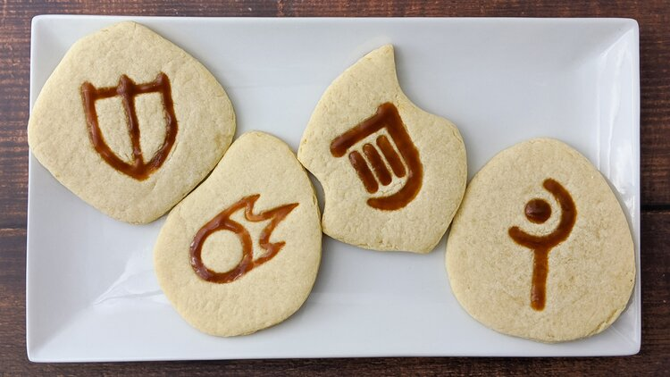

Coffee Biscuits

Description
"A buttery biscuit with a subtle coffee flavor." - Eorzean Database
- Prep time: 1 hour and 30 minutes
- Cook time: 20 minutes
- Yields 18 large cookies
Ingredients
Cookies
- 1 cup (227 g) butter
- 1/2 cup (50 g) whole roasted coffee beans
- 1 cup (200 g) sugar
- 2 eggs
- 1 tsp (5 mL) vanilla extract
- 3 cups (525 g) all-purpose flour
- 3/4 cup (100 g) cornstarch
- 1 tsp (6 g) kosher salt
Caramel Topping
- 1/4 cup (60 mL) water
- 2 tbsp (15 g) finely ground coffee
- 1 cup (200 g) sugar
- 1/2 cup (125 mL) water
- 3/4 cup (177 mL) heavy cream
- 1/4 tsp (1.25 mL) vanilla extract
- 1/4 tsp (1.5 g) kosher salt
- 2 tbsp (30 g) butter
Steps
Cookies
- Put the butter in a small pot over low heat and let it melt completely.
- Add the coffee beans and let them soak in the butter for 1 hour over the lowest heat setting. More time will yield a stronger coffee flavor.
- Strain the coffee beans from the butter and discard them.
- Put the coffee butter in the refrigerator to cool and solidify.
- In a large bowl, cream together the sugar and the coffee butter until they are light and fluffy.
- Add the eggs and vanilla and mix until they are fully combined.
- Add the flour, cornstarch, and salt and mix until a crumbly dough forms.
- Separate the dough into 2 to 4 balls, depending on the size of your work surface.
- Place a ball of dough between two pieces of parchment paper and roll it out to 1/4 in or 6.5 mm thick.
- Use a cook cutter to cut out shapes and transfer them to a parchment paper lined baking sheet.
- Chill the cut dough in the freezer for 10 minutes.
- Preheat the oven to 325 F (163 C).
- Bake the cookies for 6 minutes, rotate and switch the pan positions, then bake for another 6 minutes.
- Let the cookies cool completely before decorating.
Caramel Topping
- Brew the ground coffee in 1/4 cup (60 mL) of water and set aside to cool.
- In a small pot set over low heat, combine the sugar and 1/2 cup (125 mL) of water. Allow the sugar to dissolve completely.
- Set the heat to medium, cover the pot with a lid, bring it to a boil, and let the solution cook for 5 to 10 minutes or until it becomes golden brown.
- Add the cream and whisk until it is fully combined.
- Add the coffee, vanilla, and salt, and whisk until they are fully combined.
- Take the pot off the heat, add the butter, and stir until it is fully melted.
- Allow the caramel to cool at least 1 hour before using it.
- Decorate the cookies with the caramel.
Recipe from "A Recipe Reborn."
Return to main page.
Start of page.